Perubahan Iklim
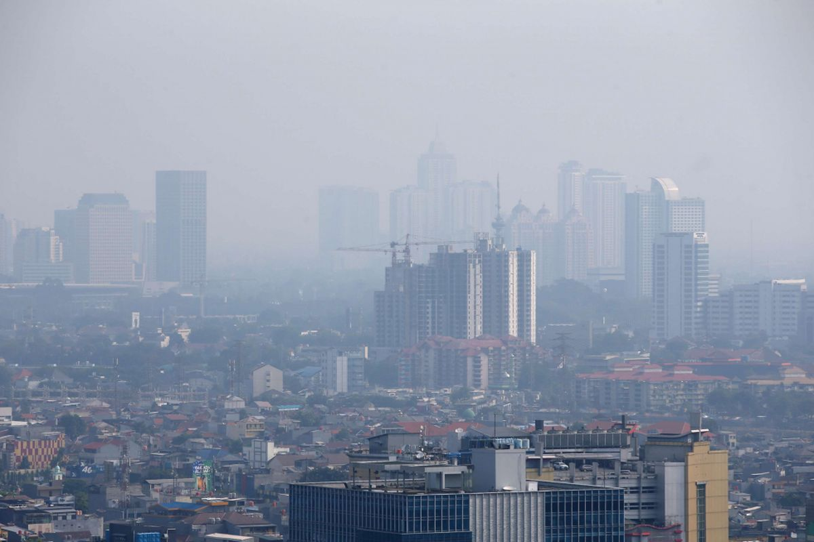
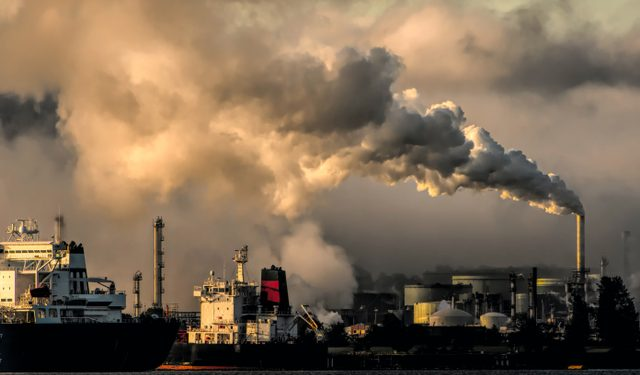
Perubahan iklim adalah perubahan jangka panjang pada pola cuaca dan suhu rata-rata di Bumi. Perubahan iklim biasanya berlangsung secara alami, namun prosesnya mulai dipercepat sejak tahun 1800an, yakni awal mula Revolusi Industri. Perubahan iklim dipicu oleh faktor aktivitas manusia dan faktor alami. Faktor alaminya berupa variasi intensitas sinar matahari, letusan gunung berapi, beserta fenomena El Nino yang membawa suhu hangat dan La Nina yang membawa suhu dingin. Namun, penyebab utama dari perubahan iklim adalah faktor aktivitas manusia. Sejak Revolusi Industri memunculkan berbagai teknologi yang semakin berkembang, penggunaan sumber daya alam seperti batu bara, minyak bumi, serta gas alam untuk bahan bakar pabrik industri dan kendaraan bermotor meningkat. Sumber daya alam yang terus dieksploitasi menyebabkan pelepasan gas rumah kaca yang berlebih berada di atmosfer, yang menyebabkan panas yang diperangkap oleh gas-gas menjadi terlalu banyak. Sektor pertanian dan peternakan juga menyumbangkan gas rumah kaca seperti nitrogen oksida dan metana melalui proses pengolahan lahan, penggunaan pupuk nitrogen, budidaya padi, pengelolaan kotoran dan urine ternak, serta produksi pakan. Adapun penggunaan bahan kimia berbahaya seperti klorofluorokarbon sebagai zat pendingin di kulkas atau produk semprot seperti hairspray yang semakin memperkuat efek rumah kaca. Penumpukan sampah yang berasal dari gaya hidup konsumtif melepaskan gas metana, sementara pembakaran sampah menghasilkan CO₂. Selain itu, deforestasi untuk peralihan lahan mengurangi pepohonan yang dibutuhkan untuk kesejukan udara dan persediaan oksigen.
Jika tidak ditangani secara cepat, perubahan iklim dapat mengubah ekosistem daratan dan lautan dengan meningkatkan risiko kebakaran hutan dan merusak terumbu karang, yang mengakibatkan banyak makhluk hidup kehilangan habitatnya. Perubahan iklim juga melelehkan es di Kutub Utara dan Kutub Selatan, yang mengganggu aktivitas hewan seperti beruang es dan pinguin serta meningkatkan tinggi permukaan lautan. Bagi manusia, perubahan iklim menghasilkan gelombang panas ekstrem yang menjadikan tubuh cepat lelah, kurang fokus, dan bahkan sakit. Perubahan iklim juga menghasilkan pemuaian air lautan dan meningkatkan jumlah uap air, sehingga bencana banjir semakin sering terjadi. Pola cuaca yang terlalu panas dapat menjadikan krisis air bersih serta krisis pangan. Perubahan iklim merupakan suatu fenomena yang dapat memengaruhi segala aspek kehidupan, maka penanganannya harus segera dilakukan.
Tujuan SDGs 13
-
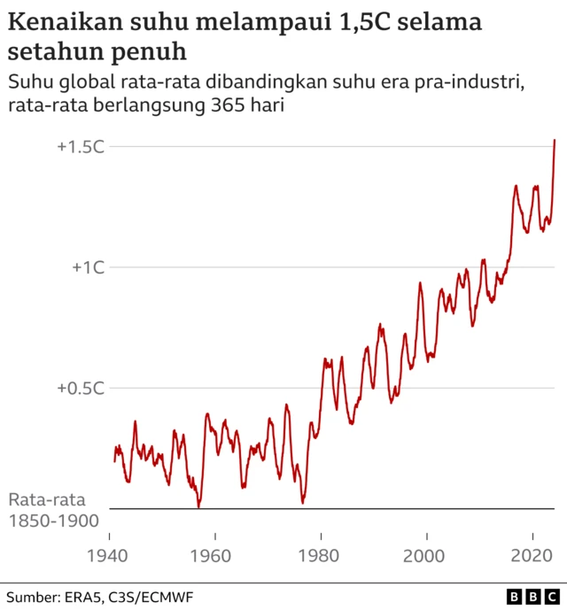
1. Menjaga peningkatan suhu rata-rata global di bawah 2°C, dan mengupayakan angkanya tidak melewati 1,5°C
-
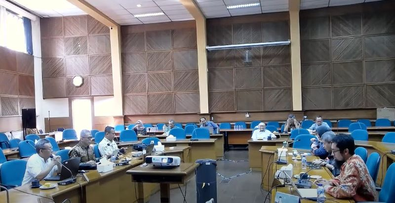
2. Memperkuat ketahanan dan adaptasi terhadap bahaya perubahan iklim dan bencana alam di semua negara
-
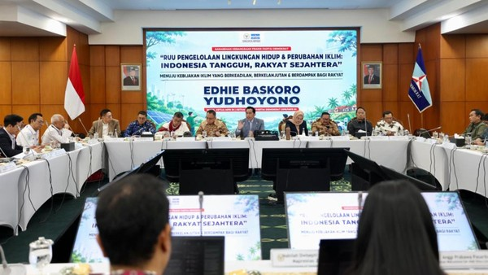
3. Mengintegrasikan tindakan antisipasi perubahan iklim ke dalam kebijakan, strategi dan perencanaan nasional
-
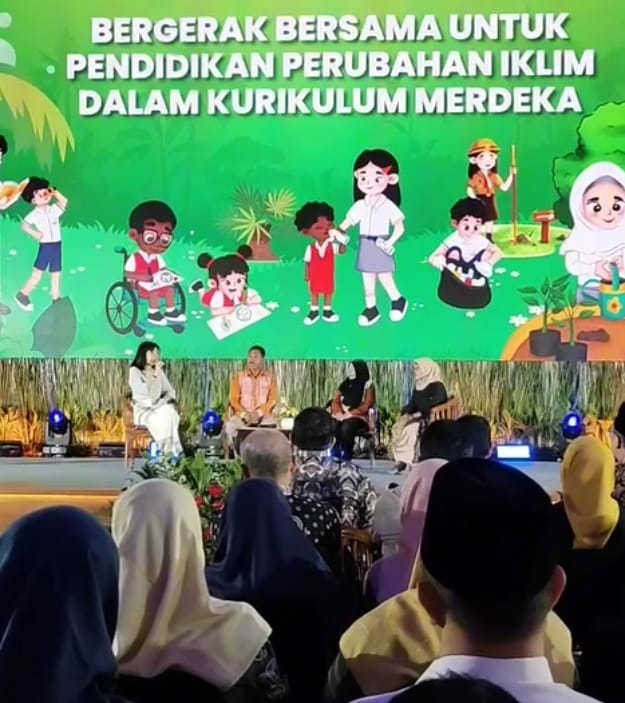
4. Meningkatkan pendidikan, penumbuhan kesadaran, serta kapasitas manusia dan kelembagaan terkait mitigasi, adaptasi, pengurangan dampak dan peringatan dini perubahan iklim
-
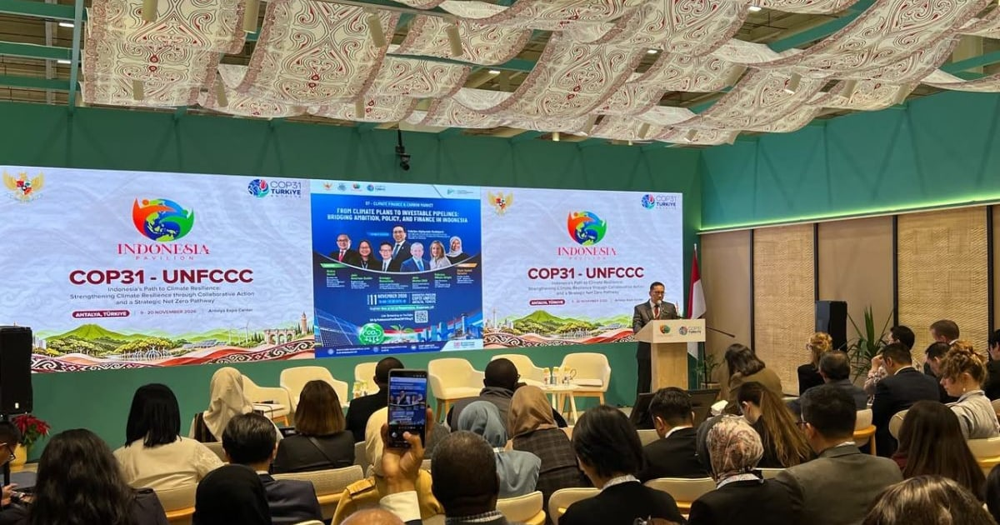
5. Melaksanakan komitmen negara maju pada the United Nations Framework Convention on Climate Change untuk tujuan mobilisasi dana bersama sebesar 100 miliar dolar Amerika per tahun pada tahun 2020 dari semua sumber untuk mengatasi kebutuhan negara berkembang dalam konteks aksi mitigasi yang bermanfaat dan transparansi dalam pelaksanaannya dan mengoperasionalisasi secara penuh the Green Climate Fund melalui kapitalisasi dana tersebut sesegera mungkin
-
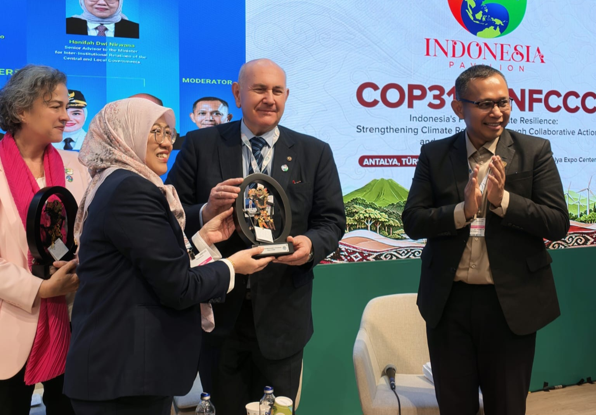
6. Menggalakkan mekanisme yang meningkatkan kapasitas perencanaan dan pengelolaan yang efektif terkait perubahan iklim di negara kurang berkembang, negara berkembang pulau kecil, termasuk fokus pada perempuan, pemuda, serta masyarakat lokal dan marjinal
Kondisi Sekarang Secara Global
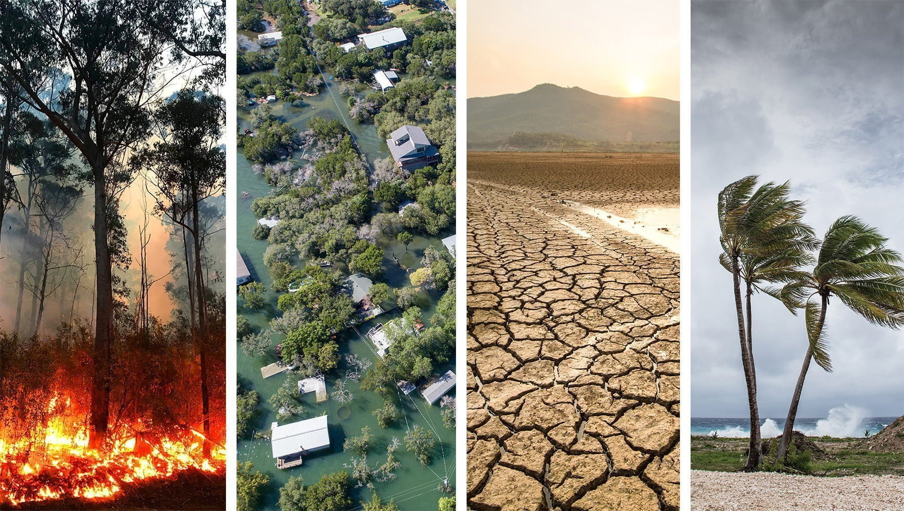
Saat ini, suhu Bumi sudah mencapai peningkatan 1,44°C dibandingkan pada masa pra-industri (1850-1900). Padahal, target PBB adalah pencegahan agar peningkatan suhu tidak mencapai 1,5°C. Menurut laporan terbaru PBB, suhu global kemungkinan besar akan menembus ambang batas 1,5°C dalam satu dekade ke depan. Hal ini hanya dapat dicegah jika kita sebagai manusia yang tinggal di Bumi dapat mengganti cara hidup kita dan menurunkan emisi gas rumah kaca secara lebih cepat. Sekarang, dampaknya sudah terasa dengan adanya:
• Suhu bumi tahun 2023 sampai 2026 tercatat sebagai empat tahun terpanas sepanjang sejarah pengamatan.
• Selama sepuluh tahun terakhir, suhu panas lautan telah menyerap 90% kelebihan panas dari gas rumah kaca yang terus memecahkan rekor tertinggi yang baru setiap tahunnya.
• Gletser dan es kutub sudah kehilangan 400 gigaton massa hanya dalam satu tahun terakhir dan mengalami penyusutan merata di seluruh 19 wilayah bergletser selama empat tahun berturut-turut, dan diperkirakan sepertiga gletser akan lenyap pada tahun 2050.
• Bencana kekeringan diperkirakan akan melanda lebih dari tiga perempat populasi dunia pada tahun 2050, dengan penyimpanan air tanah menurun secara global sejak 2014.
• Menurut Organisasi Kesehatan Dunia (WHO), antara tahun 2030 hingga 2050, perubahan iklim diperkirakan akan memicu sekitar 250.000 kematian tambahan setiap tahunnya akibat malnutrisi, malaria, diare, dan stres akibat cuaca panas. Pada tahun 2030, lonjakan biaya kesehatan yang diakibatkan oleh perubahan iklim diperkirakan akan mencapai 2 hingga 4 miliar dolar Amerika Serikat setiap tahunnya.
Kondisi Sekarang di Indonesia
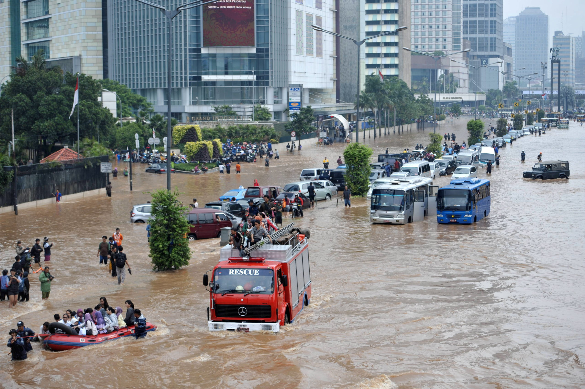
Perubahan iklim merupakan permasalahan global, sehingga dampaknya juga dirasakan oleh Indonesia. Melalui perubahan iklim, berbagai masalah lain muncul, seperti kelaparan akibat dari krisis pangan, peningkatan pengidapan penyakit, kehilangan lahan dan hutan akibat kebakaran, serta kerusakan yang disebabkan oleh bencana banjir dan tanah longsor. Seiring bertambahnya waktu, kondisi Indonesia masih cukup terpuruk, dengan:
• Suhu rata-rata nasional Indonesia mencapai peningkatan 0,8°C dibandingkan periode normal 1991- 2020, dan diprediksi dapat meningkat menjadi 1,3°C.
• Awal musim hujan dan kemarau menjadi sulit diprediksi, dengan curah hujan ekstrem memicu banjir bandang, tanah longsor, dan gelombang tinggi, sementara musim kemarau berkepanjangan meningkatkan risiko kekeringan.
• Pada kebakaran hutan di Agustus sampai Oktober 2026, El Nino yang berpadu dengan pemanasan akibat perubahan iklim menambah 1,6°C terhadap suhu menurut World Weather Attribution. Kebakaran menghanguskan sekitar 505 ribu hektare hutan alam dan 555 ribu hektare lahan gambut yang dilindungi, sehingga menantang target FOLU Net Sink 2030.
Tantangan SDGs 13
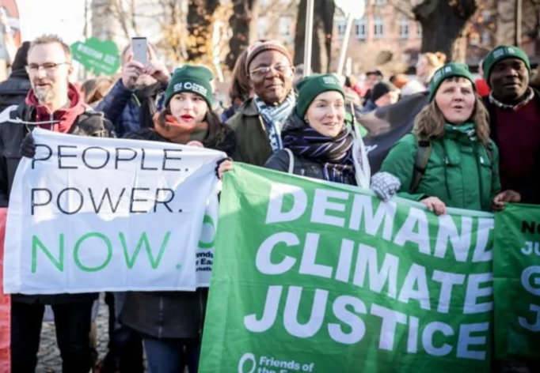
Negara-negara berkembang tidak mempunyai pendanaan yang cukup untuk mengatasi perubahan iklim
Program SDGs 13 merupakan sebuah program yang cukup ambisius, mengingat bahwa penanganan perubahan iklim berskala global membutuhkan perubahan dan pembiayaan yang besar. Maka, perwujudan SDGs 13 menghadapi berbagai tantangan. Salah satu tantangan terbesar adalah peralihan perekonomian dari pembukaan lahan dan penggunaan bahan bakar fosil menjadi energi terbarukan membutuhkan teknologi yang modern dan pembiayaan yang mahal, yang belum tentu dipunyai oleh negara-negara berkembang. Dengan industri yang sudah terbiasa dengan emisi gas rumah kaca yang besar selama berpuluhan tahun, perubahan ini membutuhkan waktu yang sangat lama dan strategi yang benar-benar sudah matang. Negara-negara berkembang juga mempunyai sumber daya dan kapasitas adaptasi terhadap perubahan iklim yang terbatas, sehingga membutuhkan lebih banyak waktu dan dana. Pemasukkan target mitigasi dan adaptasi iklim dalam perencanaan serta kebijakan pembangunan nasional juga membutuhkan koordinasi antar bidang dan pemantauan yang konsisten agar terlaksana secara tepat, dan tambahan waktu dan biaya untuk menerapkannya secara nyata.
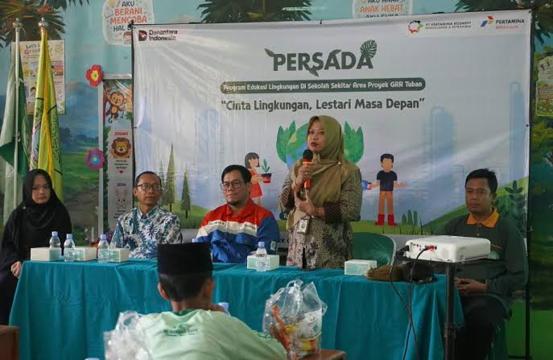
Diperlukan tenaga dan waktu yang banyak untuk memastikan pemerataan pemahaman mengenai perubaahn iklim.
Meskipun adanya penegakkan hukum yang lebih tegas mengenai gaya hidup yang berkelanjutan dan upaya untuk menjaga lingkungan sekitar, pemahaman masyarakat mengenai perubahan iklim masih kurang baik. Upaya untuk mengedukasi masyarakat juga sulit terlaksana karena diperlukannya banyak tenaga pendidik yang berkualitas beserta perlengkapan yang dibutuhkan untuk melakukan program sosialisasi. Adapun jumlah anggota masyarakat yang menunjukkan sikap acuh tidak acuh dan tidak ingin mengubah cara hidupnya karena tidak ingin menyusahkan diri demi penanganan perubahan iklim. Selain itu, perubahan iklim sudah berjalan selama bertahun-tahun, sehingga penanganan yang dilakukan masih kurang memadai dengan kemungkinan bahwa dampak dari perubahan iklim sudah tidak bisa dibalikkan. Supaya perubahan iklim benar-benar dihentikan, kemitraan global yang kuat dan penuh komitmen harus sungguh-sungguh dijalin agar upaya suatu wilayah tidak dihambat oleh wilayah lain.
Potensi Indonesia untuk SDGs 13
Sebagai negara kepulauan terbesar di dunia yang penuh dengan sumber daya beragam, Indonesia mempunyai lokasi strategis dan potensi besar untuk mewujudkan SDGs 13. Indonesia mempunyai penyerap karbon secara alami melalui hutan hujan tropis di Kalimantan dan Papua, serta ekosistem lautnya yang luas di Maluku dan Sulawesi. Wilayah-wilayah ini bisa mengurangi jumlah emisi gas rumah kaca yang terperangkap di atmosfer dengan menyerap dan menyimpan emisi gas. Dengan lokasinya di garis khatulistiwa yang menjadikan iklim tropis dan letaknya yang dekat lautan luas, Indonesia juga mempunyai potensi untuk penggunaan pembangkit surya dan pembangkit air puluhan megawatt. Hal ini memberikan potensi besar untuk transisi energi yang dapat menekan ketergantungan terhadap bahan bakar fosil. Penguatan skema nilai ekonomi karbon, pasar karbon, serta pengembangan ekonomi hijau dan biru juga membuka peluang untuk pendanaan iklim secara lanjut, reforestasi, dan penciptaan lapangan kerja baru. Sehingga, skema ini dapat menumbuhkan ekonomi negara dan juga menyelesaikan permasalahan perubahan iklim. Agar SDGs ke-13 benar-benar terwujud, dibutuhkan kebijakan negara yang dimasukkan target-target mengenai penanganan perubahan iklim. Target iklim seperti visi netral karbon 2060, integrasi SDGs ke perencanaan pembangunan nasional dan daerah, serta adaptasi iklim di tingkat desa dan sektor pertanian seperti program ProKlim memperkuat kapasitas ketahanan iklim. Kekayaan alam, inovasi teknologi untuk energi terbarukan, pertumbuhan ekonomi dengan pasar karbon, dan tata kelola kebijakan yang memuat tujuan SDGs 13, Indonesia berpeluang besar untuk membangun masa depan yang aman dan tangguh dari perubahan iklim.
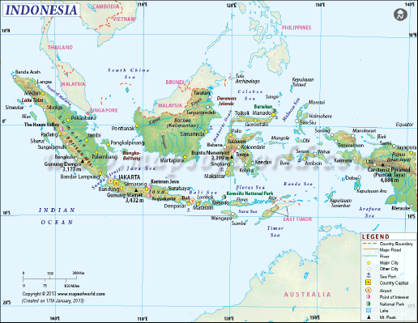
Solusi SDGs 13
Untuk mengatasi masalah, masyarakat umum harus mengubah tindakannya menjadi lebih ramah lingkungan agar bisa mencegah eskalasi perubahan iklim. Di antaranya, penghematan energi akan menurunkan kebutuhan untuk terus menggunakan sumber daya yang terbatas, sehingga mengurangi gas rumah kaca yang muncul karena pembakaran bahan bakar fosil. Penerapan 3R dapat mengurangi jumlah gas emisi rumah kaca yang dihasilkan oleh tumpukan sampah. Penggunaan transportasi umum dan pupuk organik juga mengurangi gas-gas buruk yang dilepaskan ke lingkungan. Dengan sikap non-konsumtif, permintaan untuk berbagai produk yang tidak terlalu dibutuhkan dapat menurun dan mengurangi kebutuhan untuk produksi massal di industri yang menghasilkan banyak limbah dan gas berbahaya. Sementara penjagaan daerah resapan air dan saluran air menghindari bencana banjir. Penanaman tumbuhan bisa mengatasi masalah kesejukan sekaligus menyediakan lebih banyak oksigen.
Solusi-solusi ini harus didampingi dengan upaya nyata dari pemerintah, agar penanganannya menjadi lebih efektif melalui kehadiran wewenang yang lebih tinggi. Pemerintah bisa menerapkan penggunaan sumber daya terbarukan di berbagai industri dan sektor ekonomi bisa mengurangi penggunaan sumber daya terbatas sebagai bahan bakar fosil. Selain itu, hukum yang dibuat lebih ketat mengenai deforestasi maupun kebersihan lingkungan juga akan menuntut masyarakat agar lebih tertib dalam menjaga alam sekitar. Kerja sama dan perolehan pendanaan dari negara lain dapat membantu negara untuk mempunyai perlengkapan yang dibutuhkan untuk menangani perubahan iklim. Edukasi dan sosialisasi yang diadakan dari pemerintah juga dapat menyadarkan masyarakat untuk lebih siap beraksi demi menyelamatkan Bumi dari perubahan iklim. Agar bekerja, solusi ini membutuhkan masyarakat dan warga untuk mengikuti teladan pemerintah dan mematuhi hukum yang ada. Masyarakat juga harus membantu dengan mengawasi dan melapor kondisi di lingkungan sekitar serta memberikan masukan bagi pemerintah.
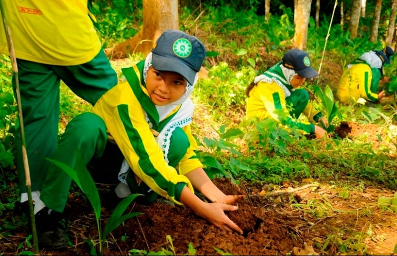
Peran Masyarakat
Sebagai sesama manusia yang tinggal di Bumi, kita sebagai masyarakat mempunyai peran penting dalam menangani perubahan iklim. Masyarakat dapat menjalani gaya hidup berkelanjutan, mendukung program-program pemerintah, serta senantiasa mengedukasi diri. Gaya hidup berkelanjutan meliputi:
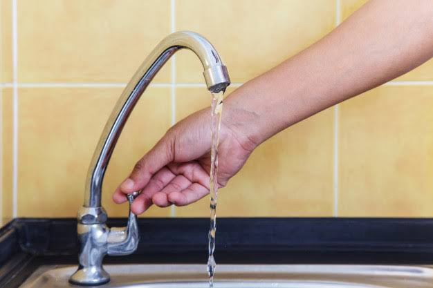
Penghematan energi dan sumber daya seperti listrik dan air
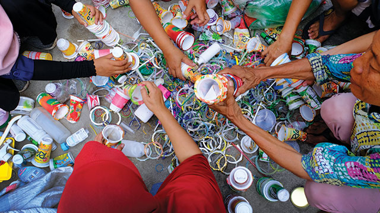
Penerapan 3R dan pengurangan sampah
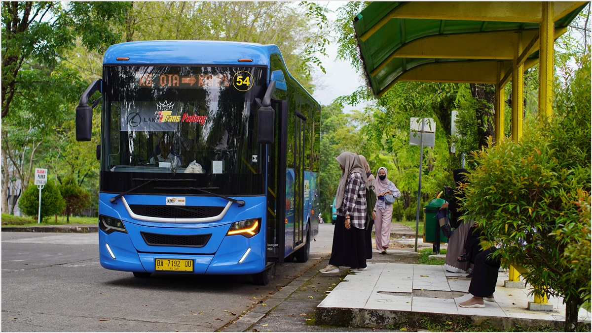
Penggunaan transportasi umum
Pengurangan keborosan dan sikap konsumtif
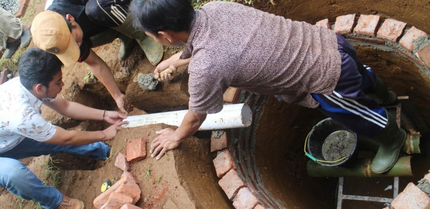
Penjagaan daerah resapan air
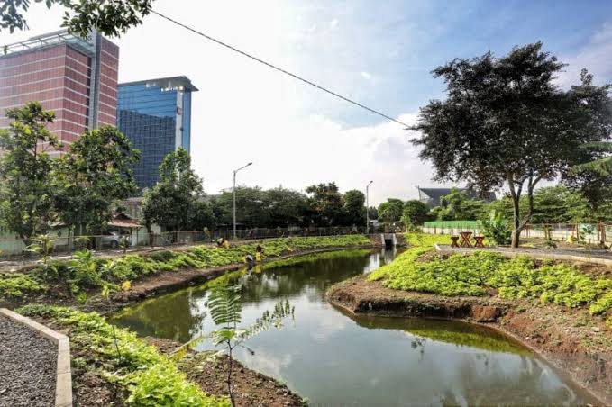
Pengelolaan drainase dan saluran air
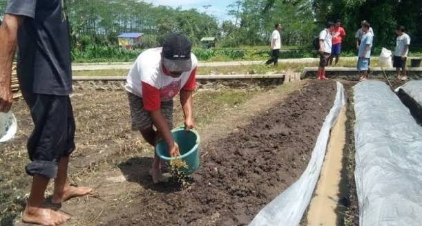
Penggunaan pupuk organik
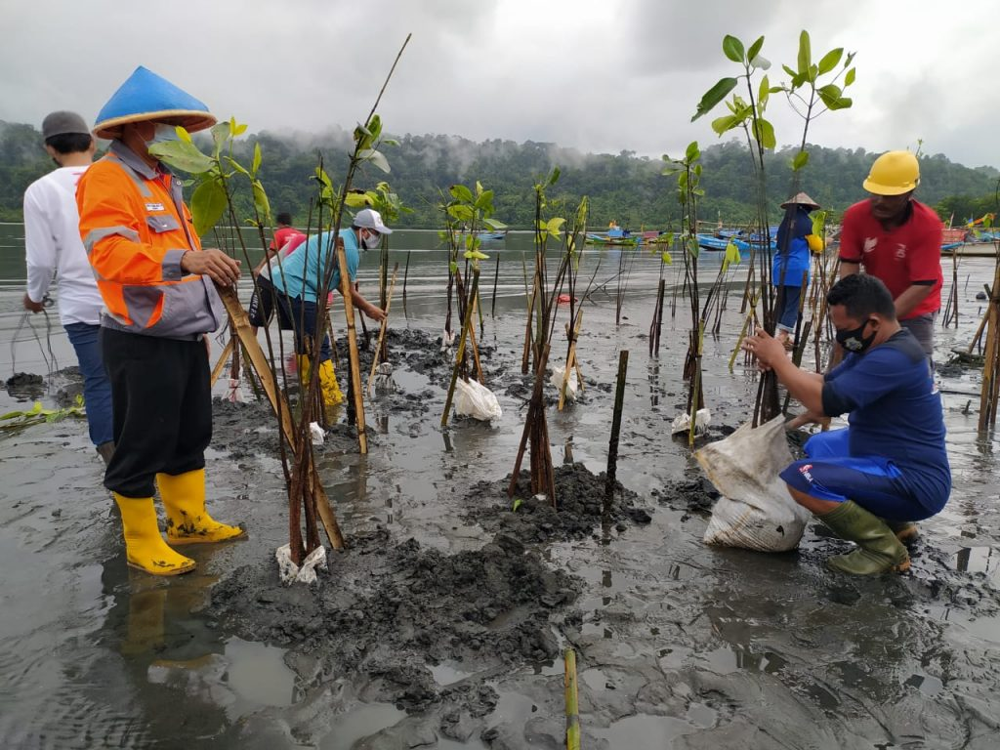
Penanaman dan perawatan tumbuhan seperti mangrove
Hubungan dengan SDG lain

SDGs ke-2 menyatakan tujuan untuk tidak ada kelaparan, yang berarti bahwa perubahan iklim harus segera ditangani supaya tidak terjadi krisis pangan.
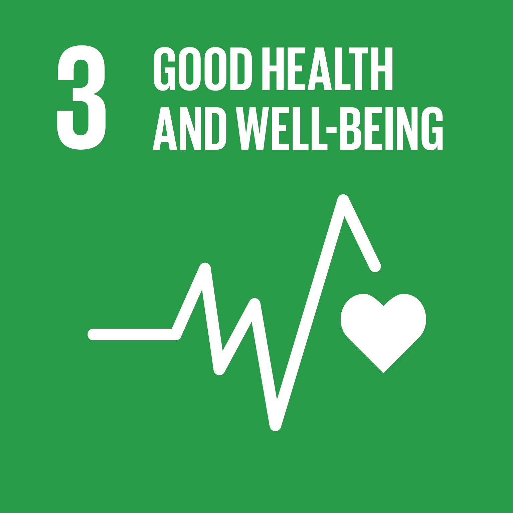
SDGs ke-3 menyatakan tujuan untuk mendapatkan kehidupan yang sehat dan sejahtera, namun perubahan iklim harus segera diatasi agar tidak berdampak negatif pada kesehatan dan kenyamanan manusia, habitat hewan, serta kondisi alam.
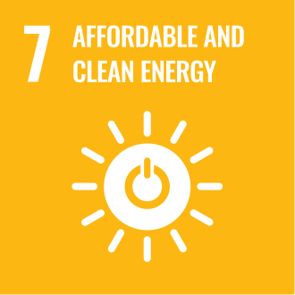
SDGs ke-7 menyatakan energi bersih dan terjangkau, yang butuh dilakukan untuk penanganan perubahan iklim agar penggunaan energi yang dihasilkan dari bahan bakar fosil dikurangi.
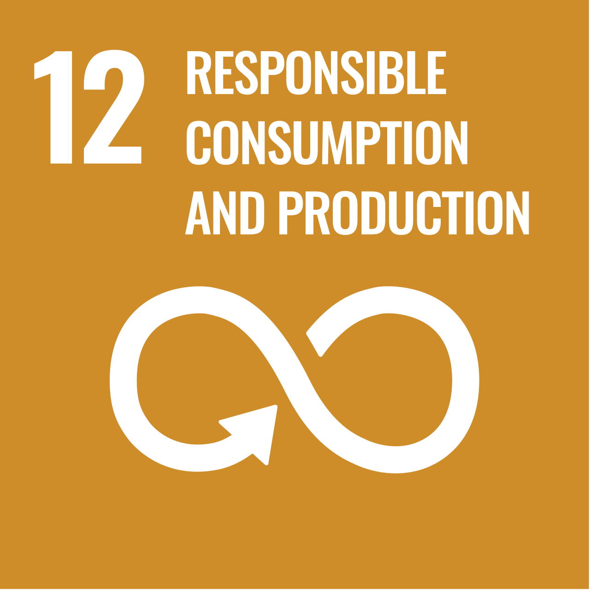
SDGs ke-12 menyatakan konsumsi dan produksi yang bertanggung jawab, yang perlu untuk diwujudkan agar dapat meredakan perubahan iklim.

SDGs ke-14 menyatakan tujuan untuk menjaga ekosistem lautan, namun perubahan iklim harus segera ditangani agar habitat hewan laut dan terumbu karang dijaga dan sumber daya tetap dapat digunakan secara berkelanjutan.

SDGs ke-15 menyatakan tujuan untuk menjaga ekosistem daratan, namun perubahan iklim harus ditangani terlebih dahulu sebelum menyebabkan kebakaran hutan dan bencana banjir atau tanah longsor agar sumber daya daratan terjaga.
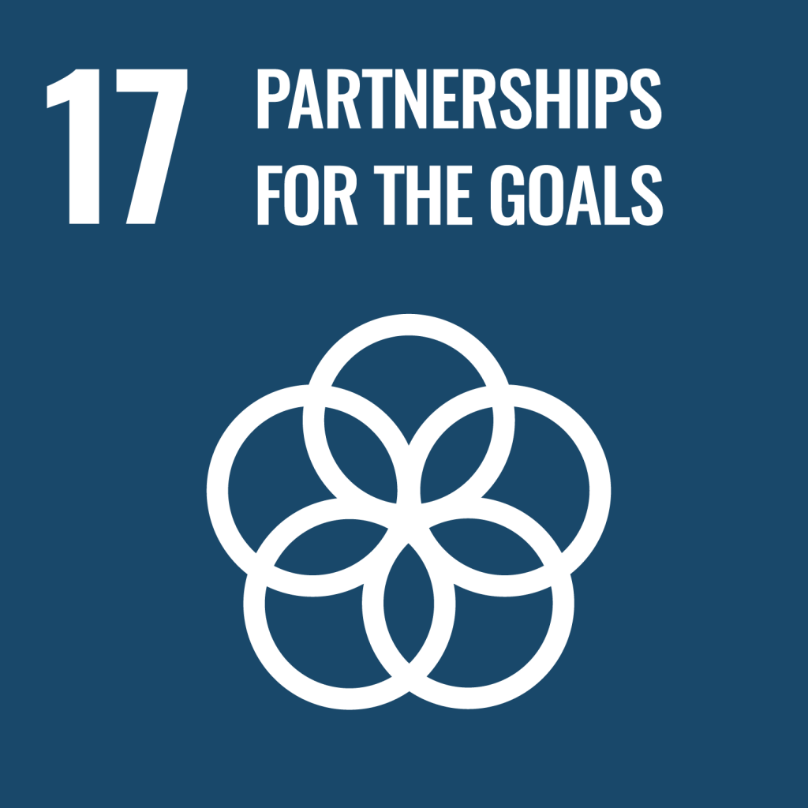
SDGs ke-17 menyatakan kemitraan global yang sunguh-sungguh dibutuhkan agar perubahan iklim benar-benar ditangani, sehingga dinamika wilayah lain tidak menghambat upaya wilayah untuk menangani perubahan iklim.
Hubungan dengan Pancasila
Nilai Ketuhanan menjadi pedoman Indonesia untuk berupaya menjaga alam dan Bumi sebagai ciptaan Tuhan, sehingga upaya untuk menangani perubahan iklim juga merupakan perwujudan rasa syukur kepada Tuhan. Dalam kerjasama internasional, nilai Ketuhanan juga menjadi pedoman untuk menghargai perbedaan antarnegara sehingga kerjasama dapat berjalan secara rukun dan damai.
Nilai Kemanusiaan muncul dalam kepedulian setiap negara terhadap semua manusia, termasuk rakyat dari negeri lain. Kepedulian terhadap kemanusiaan diwujudkan dengan memberikan bantuan sumber daya, teknologi, atau SDM dalam kerjasama terhadap negara-negara yang berkembangnya. Juga, para negara melakukan usaha paling maksimal untuk menangani perubahan iklim supaya hak rakyatnya untuk hidup secara sejahtera terpenuhi.
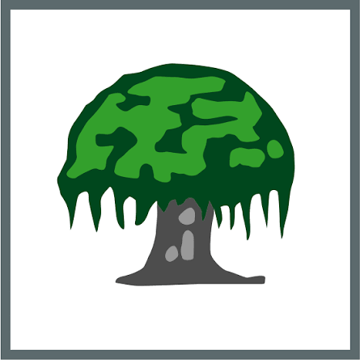
Nilai Persatuan dapat diwujudkan dalam upaya masyarakat untuk bergerak bersama dengan pemerintah untuk menangani perubahan iklim dengan penerapan gaya hidup berkelanjutan dan kebijakan nasional, sementara diadakan kerjasama antarnegara untuk mewujudkan SDG 13 secara lebih efektif.
Nilai Kerakyatan mementingkan adanya musyawarah mufakat dan dialog dalam negara dan antarnegara. Pemerintah harus mendengarkan kebutuhan rakyat untuk membuat perencanaan pembangunan yang mewujudkan SDG 13, dan rakyat harus mendukung kebijakan yang sudah ada. Pihak pemerintah antarnegara juga harus saling menghormati pendapat satu sama lain, dan mencapai kesepakatan yang saling menguntungkan dan memprioritaskan kepentingan bersama.
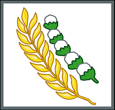
Nilai Keadilan mendorong adanya akses yang adil dan merata bagi semua orang untuk hidup di Bumi secara sehat dan sejahtera, yang membutuhkan penanganan perubahan iklim untuk menghindari berbagai bencana banjir dan tanah longsor ataupun penyakit. Selain itu, nilai Keadilan menjadi pedoman bagi Indonesia ketika menjalani kerjasama antarnegara, karena semua negara harus mendapatkan keuntungan.